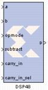

The Xilinx DSP48 block is an efficient building block for DSP applications that use Xilinx Virtex®-4 devices. The DSP48 combines an 18-bit by 18-bit signed multiplier with a 48-bit adder and programmable mux to select the adder's input.Operations can be selected dynamically. Optional input and multiplier pipeline registers can be selected as well as registers for the subtract, carryin and opmode ports. The DSP48 block can also target devices that do not contain the DSP48 hardware primitive if the Use synthesizable model option is selected.